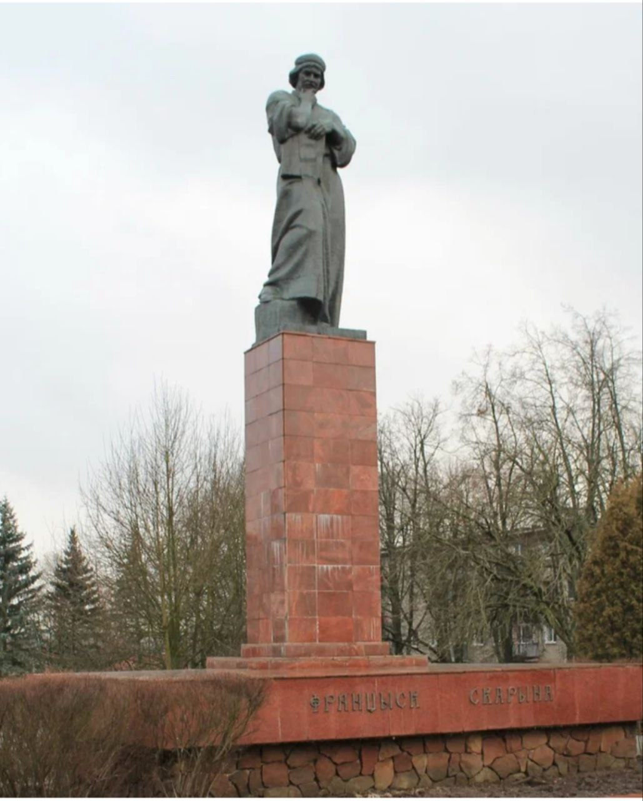

Памятник Франциска Скорины
Памятник Франциску Скорине в городе Полоцке - первый монумент в честь великого просветителя и книгопечатника в Республике Беларусь. Скульптура была установлена на пересечении улиц Гоголя и Франциска Скорины, на одноименной площади.
Архитектурный проект и макет памятника разработали А. Заспицкий, А. Глебов, И. Глебов. Скульптура была установлена в городе в 1974 году. Высота всего монумента составляет более двенадцати метров, а размер самой фигуры - около пяти с половиной метров.
Пройди тест для закрепления результата.
Тест